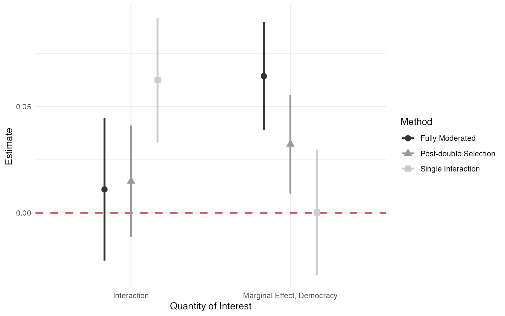

vignettes/post-double-selection.Rmd
post-double-selection.RmdIn this vignette, we demonstrate how to use the inters package to conduct post-double selection for interactions with linear models. We use the remittances data of Escribà-Folch, Meseguer, and Wright (2018) to illustrate the method, as shown in Blackwell and Olson (2019). The goal of this study was to evaluate how remittances affect political protest differently in democracies and non-democracies.
To begin, we load the data and run two alternative models. The first is a simple single-interaction model that includes the treatment (remittances, remit), the moderator (a binary variable for autocracy, dict), an interaction between these two, and a series of control variables. We use the feols function from the fixest package to handle country and period fixed effects along with clustering at the country level.
data(remit)
single <- feols(Protest ~ remit*dict + l1gdp + l1pop + l1nbr5 + l12gr + l1migr
+ elec3 | period + cowcode, data = remit)
coeftable(single, cluster = ~ caseid)[c("remit", "remit:dict"),]## Estimate Std. Error t value Pr(>|t|)
## remit 0.0001522474 0.02253011 0.006757506 0.994614839
## remit:dict 0.0624127003 0.02336419 2.671297291 0.008156839Next, we compare this single-interaction model to a model that fully interacts the moderator with the entire set of controls, including the fixed effects. Blackwell and Olson (2019) call this the fully moderated model.
fully <- feols(Protest ~ dict * (remit + l1gdp + l1pop + l1nbr5 + l12gr + l1migr +
elec3 + factor(period) + factor(cowcode)),
data = remit)## Variables 'dict:factor(cowcode)94', 'dict:factor(cowcode)100' and 60 others have been removed because of collinearity (see $collin.var).
coeftable(fully, cluster ~ caseid)[c("remit", "dict:remit"),]## Estimate Std. Error t value Pr(>|t|)
## remit 0.06427051 0.03226551 1.9919259 0.04769348
## dict:remit 0.01102520 0.04321956 0.2550975 0.79890106Finally, we compare both of these approaches to that of the post-double-selection estimator of Belloni, Chernozhukov, and Hansen (2014), which uses the lasso to select variables that are important to the outcome, treatment, or the treatment-moderator interaction, then runs a standard least squares regression on those variables selected by the various lasso steps. The post_ds_interactions function implements this procedure and takes character strings with the names of various variables. Furthermore, it can also handle clustered data, which importantly changes the calculation of the penalty parameter in the lasso steps.
controls <- c("l1gdp", "l1pop", "l1nbr5", "l12gr", "l1migr", "elec3")
post_ds_out <- post_ds_interaction(data = remit, treat = "remit", moderator = "dict",
outcome = "Protest", control_vars = controls,
panel_vars = c("cowcode", "period"),
cluster = "caseid")
lmtest::coeftest(post_ds_out, vcov = post_ds_out$clustervcv)[c("remit", "remit_dict"),]## Estimate Std. Error t value Pr(>|t|)
## remit 0.03225160 0.01183225 2.725736 0.006462323
## remit_dict 0.01488431 0.01336672 1.113535 0.265590094With these results in hand, we can compare the different methods to see that the fully moderated and post-double-selection approaches both provide similar point estimates, with the post-double-selection estimator having slightly less uncertainty. The single-interaction model, on the other hand, leads to a dramatically different conclusion.
